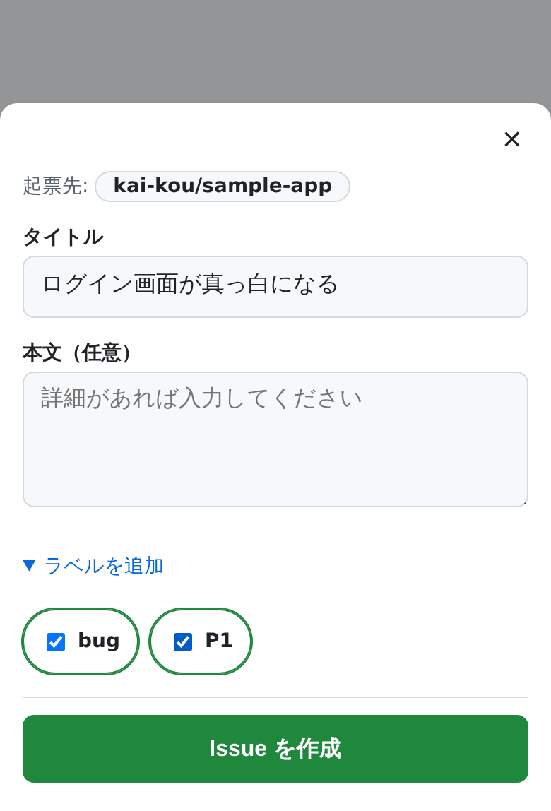
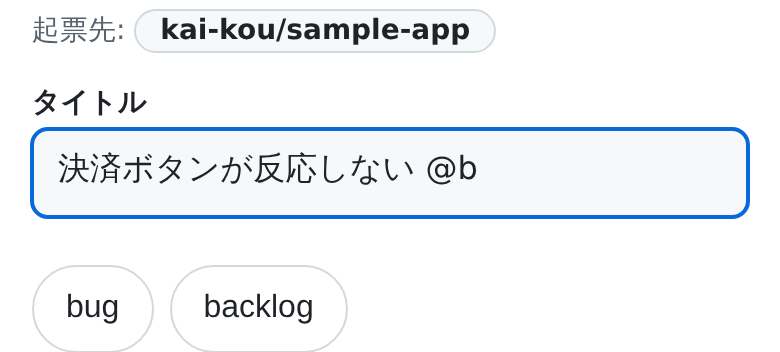

公式アプリは遠い The official app is far away
起票まで 3〜4 タップ + 4 画面かかり、ホーム画面からの直行導線がありません。 It takes 3–4 taps across 4 screens, and there is no direct route from the home screen.
Android 向け PWA・オープンソース（MIT） Android PWA · Open source (MIT)
ホーム画面をタップ → タイトルを入力 → 送信。GitHub Issues への起票だけに特化した Android 向け PWA です。PAT（個人アクセストークン）の発行も管理も不要 — GitHub でログインするだけで使い始められます。 Tap the home-screen icon, type a title, send. An Android PWA built for one job: filing GitHub issues fast. No personal access token to create or rotate — just sign in with GitHub.
要求する権限は Issues の読み書きのみ。コードには一切アクセスしません。 サーバーはあなたのデータを保存しません。 The app asks for read & write on Issues only — never your code. The server stores none of your data.

GitHub Issues でタスクやアイデアを管理していると、思いついた瞬間にスマホから書き留める のが一番難しくなります。 When you run your tasks and ideas on GitHub Issues, the hardest moment is writing one down from your phone the second it occurs to you.
起票まで 3〜4 タップ + 4 画面かかり、ホーム画面からの直行導線がありません。 It takes 3–4 taps across 4 screens, and there is no direct route from the home screen.
issues/new
のプレフィル URL をショートカットにしても、公式アプリがリンクを横取りして
プレフィルを落とすことがあります。
Turning an issues/new prefill URL into a shortcut works — until the
official app intercepts the link and drops the prefilled values.
HTTP Shortcuts 等で自作すると動きますが、PAT の手動発行・管理が最大の摩擦として 残り続けます。 A DIY setup with tools like HTTP Shortcuts does work, but issuing and rotating a personal access token by hand stays the biggest friction.
iOS には専用アプリが複数あるのに、Android × PWA でワンタップ起票できるツールは 調べた限り見当たりませんでした。 iOS has several dedicated apps, yet as far as our research goes there was no one-tap issue capture tool for Android as a PWA.
そこで「ホーム画面タップ → 数秒で起票」だけに特化した PWA を作りました。 キャプチャ（起票）に徹し、整理・閲覧・編集は GitHub 側に委ねる設計です。 競合調査の詳細は 市場・競合リサーチ に残しています。 So we built a PWA that does one thing: home-screen tap to filed issue, in seconds. It sticks to capture and leaves triage, browsing and editing to GitHub itself. The competitive research behind that call is in the repository (Japanese): market & competitor research.
セットアップは初回だけ。以降はアイコンをタップするところから始まります。 Setup happens once. After that, every capture starts with a tap on the icon.
アプリを開くと GitHub の認可画面に進みます。PAT の発行は必要ありません。 Opening the app takes you to GitHub's authorization screen. No token to issue.
起票したいリポジトリにインストールします。Organization では、管理者でない場合はインストール申請となり承認待ちになることがあります。 Install it on the repositories you want to file into. In an organization, a non-admin request goes to an owner for approval.
Android Chrome のメニュー（⋮）→「アプリをインストール」、または アドレスバーのインストールアイコンをタップします。 In Android Chrome, use the ⋮ menu → "Install app", or tap the install icon in the address bar.
以降はホーム画面から直行できます。ショートカットがリポジトリとラベルを覚えています。 From then on it's a direct route — the shortcut already remembers the repository and labels.
起動 → 入力 → 送信にタップを 1 つでも足す機能は、既定でオフか、そもそも作りません。 Anything that adds even one tap between launch, typing and sending is off by default — or simply never built.
リポジトリ・ラベル・タイトルを初期選択した状態で開く URL を、いくつでも保存できます。アプリ上部の「保存済みショートカット」一覧から タップして開きます。 Save as many launch URLs as you like, each opening the form with its repository, labels and title already selected — then tap one from the "saved shortcuts" list at the top of the app.
/new?repo=kai-kou/notes
&labels=idea
&title=あとで調べる/new?repo=kai-kou/notes
&labels=idea
&title=Look into later# と @）
Smart input (# and @)
タイトル欄に #repo @label
と打つとインラインで候補が出て、指を動かさずにそのまま指定できます。
Type #repo or @label right in the title field and
suggestions appear inline — no need to move your thumb elsewhere.

アイコンを長押しすると「新しい Issue」「バグを報告」「改善案を起票」の 3 つを 直接開けます（Android）。自分用のプリセットは保存済みショートカットで作ります。 Long-press the icon to jump straight to "New issue", "Report a bug" or "Suggest an improvement" (Android only). Your own presets live in saved shortcuts.
Android の共有シートに本アプリが出ます。記事の URL を共有すれば本文にプレフィルされます。 The app shows up in Android's share sheet — share an article URL and it lands prefilled in the body.
圏外での起票はキューに保存され、次にアプリのホーム画面を開いたときに自動で再送されます。 Issues written out of coverage are queued and resent automatically the next time you open the app's home screen.
送信に失敗しても下書きを端末内に保全します。無言で消すことはしません。 If sending fails, the draft is kept on your device. Nothing is discarded silently.
push 権限のないリポジトリではラベルが黙って捨てられるため、送信前に警告します。 On repositories where you lack push access, labels are silently discarded — so the app warns you before you send.
アプリ本体は 2 言語対応です。ブラウザの言語設定から自動で選ばれます。 The app ships in both languages and picks one from your browser settings.
10 秒10 s
起動 → Issue 作成完了（タイトルのみなら 5 秒） Launch to created issue (5 s for title-only)
3 タップ3 taps
ショートカット起動 → 入力 → 送信 Shortcut launch → type → send
99%
起票成功率（失敗しても入力内容を失わない） Filing success rate (input never lost on failure)
5 分5 min
初回セットアップ（ログイン → 初起票） First-run setup (sign-in to first issue)
これらは プロジェクトが目標として掲げている値 であり、実測値ではありません。 目標と、それに基づく設計判断は プロジェクトミッション に公開しています。 These are the project's targets, not measured results. The targets and the design decisions derived from them are published in the repository (Japanese): project mission.
サーバーはあなたのデータを保存しません。ただし「ログを一切取っていない」わけでもない ので、そこも書いておきます。 The server stores none of your data. That said, it is not a "zero logs" service either — so that is written down too.
GitHub のトークンは暗号化した HttpOnly Cookie として端末に置かれ、JavaScript からは読めません。有効期限は最長 30 日で、リフレッシュしても延長されません。 Your GitHub token is stored as an encrypted HttpOnly cookie on your device, out of reach of JavaScript. It lasts at most 30 days and refreshing does not extend that.
リクエストのたびに Cookie を復号して GitHub へ中継するだけで、データベースを 持っていません。入力内容や設定は端末内（localStorage / IndexedDB）にのみ残ります。 Each request simply decrypts the cookie and relays to GitHub — there is no database. Your drafts and settings stay on the device (localStorage / IndexedDB).
Cloudflare 基盤側に例外ログが 5% サンプリングで最長 3 日残ることがあります。 「一切取っていない」とは言いません。 Exception logs may remain on the Cloudflare platform at 5% sampling for up to three days. We won't claim "no logs at all".
ログアウト・アカウント削除のどちらでも GitHub 側のトークンを失効させます （削除は加えて端末内のデータを消します）。アプリを経由せず GitHub の Authorized GitHub Apps から連携を解除することもできます。 Signing out or deleting your account both revoke the token on GitHub's side (deletion also wipes on-device data). You can also disconnect it directly from GitHub's Authorized GitHub Apps page.
現在、課金の仕組みはありません（利用料は発生しません）。個人開発のオープンソースを Cloudflare Workers 上で運用しているため、可用性は保証していません。業務クリティカルな 用途では、その前提でご利用ください。 There is no billing of any kind today, so using it costs nothing. It is a personal open-source project running on Cloudflare Workers, so availability is not guaranteed — please keep that in mind for business-critical use.
Issues の読み書きのみです（ほかに GitHub が自動付与する Metadata の読み取りが付きます）。コードには一切アクセスしません。実際に要求される権限は GitHub のインストール画面でご自身で確認できます。 Read and write on Issues only, plus the Metadata read permission GitHub attaches automatically. It never touches your code — and you can verify the exact permissions on GitHub's own installation screen.
Android 向けに設計しています。Web アプリなのでブラウザからは開けますが、 アイコン長押しメニューなど Android 固有の導線は iOS では利用できません。 It is designed for Android. Being a web app it opens in any browser, but Android-specific entry points such as the long-press icon menu are not available on iOS.
使えます。ただし管理者でない場合、GitHub App のインストールは申請となり、承認待ちになることがあります。 Yes. If you are not an admin, installing the GitHub App becomes a request that waits for an owner's approval.
キューに保存され、次にアプリのホーム画面を開いたときに自動で再送されます。 再送の対象はネットワーク接続の失敗のみで、24 時間送信できないままだと自動再送は 止まり、アプリ内の一覧から手動で再送・破棄します。 They are queued and resent automatically the next time you open the app's home screen. Only network failures are retried; after 24 hours without success the automatic retry stops and you resend or discard manually from the in-app list.
置けますが、この URL を単体でホーム画面のアイコンにした場合、Android の仕様で リポジトリ・ラベルの初期選択は反映されません。アプリ内の「保存済みショートカット」 一覧からタップして開いてください。 You can, but an Android home-screen icon pointing straight at that URL will not apply the preselected repository and labels. Launch it from the "saved shortcuts" list inside the app instead.
MIT ライセンスで公開しています。実装だけでなく、AI エージェント（Claude Code）に よる自律開発の運用ルールもリポジトリ内で管理しています。 Yes, under the MIT license. Beyond the implementation, the operating rules for autonomous development by an AI agent (Claude Code) are kept in the repository too.
GitHub でログインするだけ。PAT の発行も管理も要りません。 Just sign in with GitHub. No personal access token to create or manage.
ご利用前に プライバシーポリシー と 利用規約 をご確認ください。 Please read the privacy policy and terms of service before you start.